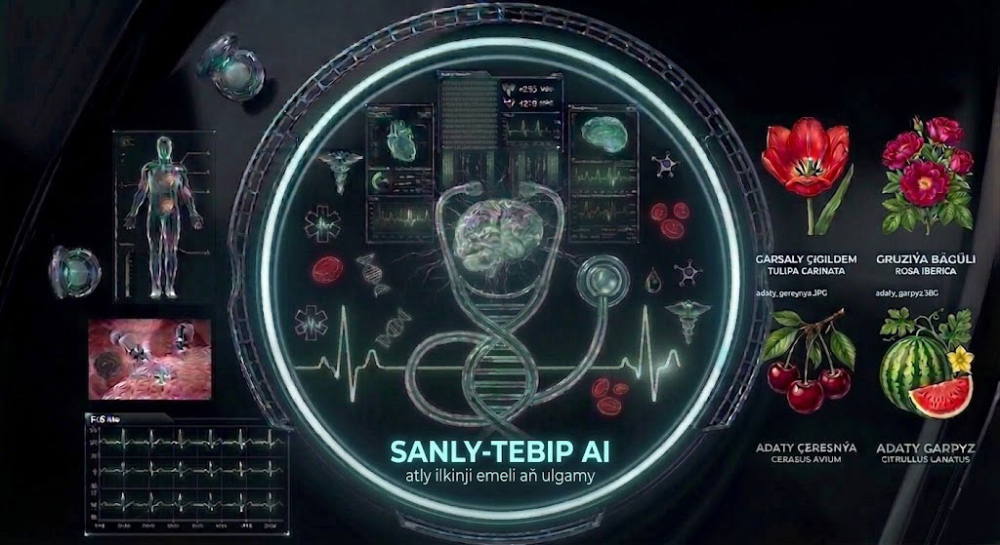

Sanly Tebip AI
👨⚕️
Salam! Men Sanly-Tebip atly ilkinji emeli aň ulgamy. Men diňe Gahryman Arkadagymyzyň «Türkmenistanyň dermanlyk ösümlikleri» atly ylmy ensiklopediýasynyň dermanlyk ösümlikleriniň şypaly syrlary we ynsan saglygy barada size maslahat bermek üçin döredilen emeli aň ulgamydyryn. Size nähili kömek edip bilerin?